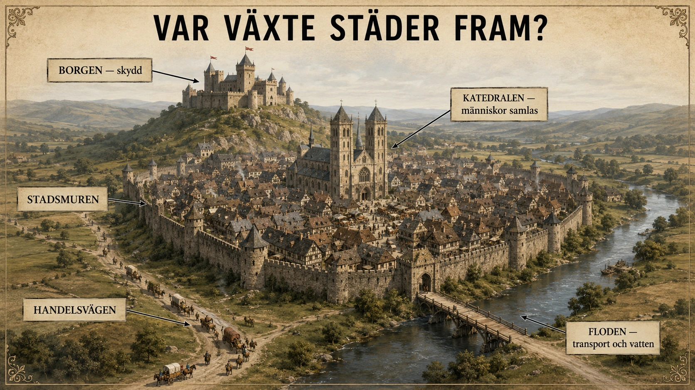
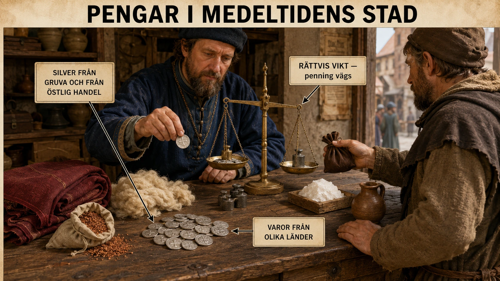
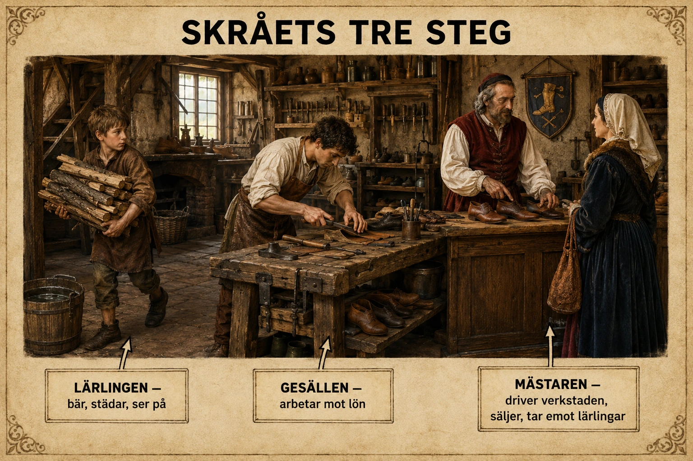
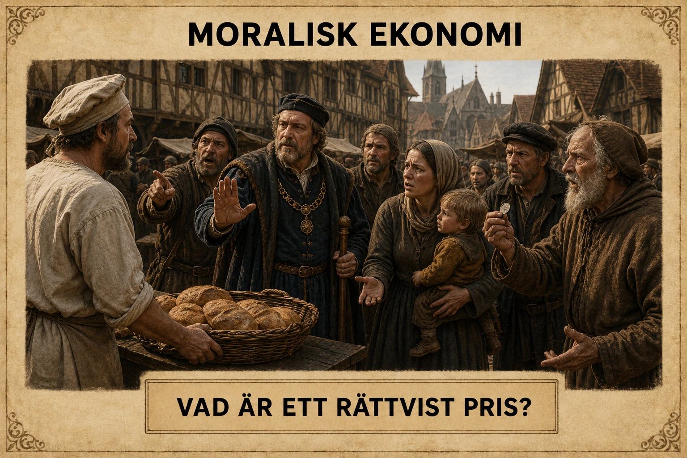

— när överskottet skapade städerna och städerna förändrade allt —
Under tidig medeltid bodde nästan alla på landsbygden. Men från omkring år 1000 började städerna växa igen. Det hängde ihop med jordbruksutvecklingen — när bönderna kunde producera mer mat behövde inte alla arbeta med jordbruk.
Staden var inte bara en större by. Den hade en annan funktion. På landsbygden producerades maten. I staden samlades handel, hantverk, pengar, marknader och kyrkliga institutioner. Människor från olika platser möttes, varor bytte ägare och idéer spreds.

Många städer växte fram nära en borg. Borgen gav skydd i en orolig tid. Runt borgen behövdes hantverkare som kunde laga vapen, baka bröd och tillverka kläder. På så sätt kunde en bosättning växa fram vid borgens fot.
Andra städer växte fram nära en stor kyrka eller ett kloster. Kyrkliga platser drog till sig pilgrimer, präster och hantverkare. En del städer byggdes på gamla romerska platser där murar och vägar redan fanns kvar.
Andra städer växte fram där flera vägar korsades, vid flodmynningar och hamnar, eller vid broar och vadställen. Där människor måste passera uppstod ofta handel — och då kunde en stad växa fram.
I förra kapitlet läste du om feodalismen och om bonden som var livegen — bunden till godset, inte fri att flytta. Men i staden gällde andra regler. Om en livegen bonde flydde till en stad och stannade där i ett år och en dag, kunde han enligt många stadsrätter bli fri.
Det här blev känt som "stadsluft gör fri". Staden hade alltså inte bara ekonomisk betydelse — den skapade en spricka i det feodala systemet.
I nästa del ska vi se hur städerna förändrade ekonomin när pengar blev allt viktigare.
Under tidig medeltid bodde de flesta människor på landsbygden. Europa var framför allt ett jordbrukssamhälle. De flesta arbetade med att producera mat, och livet kretsade kring byn, åkrarna, kyrkan och herrens gods. Men från omkring 1000-talet började Europas städer växa igen.
Detta hängde ihop med flera saker du läste om i förra avsnittet. Jordbruket blev effektivare — treskifte, hjulplog och hästar gjorde att bönderna kunde producera betydligt mer mat. Befolkningen ökade — fler barn överlevde. Och handeln blev större — vägar, hamnar och marknader blev viktigare.
När bönder kunde producera mer mat än tidigare behövde inte alla arbeta med jordbruk. Fler människor kunde i stället bli hantverkare, köpmän, transportörer, skrivare, präster, värdshusägare eller tjänare. Staden blev en ny och viktig plats i det medeltida samhället.
Det är viktigt att förstå att staden inte bara var en större by. Den hade en helt annan funktion.
På landsbygden producerades maten. I staden samlades handel, hantverk, pengar, marknader, kyrkliga institutioner och ibland politisk makt. Där möttes människor från olika platser, varor bytte ägare och idéer spreds.
Medeltida städer växte inte fram var som helst. De uppstod där människor redan hade anledning att samlas. En stad behövde fyra saker: skydd, kunder, kommunikationer och handel. Två principer förklarar var städer växte fram.
Många städer växte fram nära en borg. Borgen gav skydd i en orolig tid. Om en herre hade soldater, tjänare och administratörer vid sin borg behövdes också hantverkare som kunde laga vapen, baka bröd, brygga öl och tillverka skor. Borgen skapade både trygghet och efterfrågan — och en liten bosättning kunde växa fram vid borgens fot.
Andra städer växte fram nära viktiga kyrkor, kloster och biskopssäten. Kyrkan var en av medeltidens mäktigaste institutioner. En stor kyrka eller ett kloster drog till sig präster, munkar, pilgrimer, hantverkare och handelsmän. När människor samlades behövdes mat, logi och varor, och då kunde marknader uppstå. Där marknader återkom år efter år kunde en fast stad växa fram.
På många platser byggdes medeltida städer vidare på äldre städer från Romarrikets tid — eller på äldre romerska militärplatser. Murar, vägar, broar, hamnar och befästningar fanns kvar. Det var praktiskt att återanvända sådana platser: vägarna gick redan dit, människor kände till platsen, och stenbyggnader kunde fortfarande användas.
Många städer växte fram längs viktiga handelsvägar. Handelsmän behövde platser där de kunde vila, byta hästar, sälja varor och få skydd. Där vägar korsades blev det särskilt bra lägen för handel. En plats där flera vägar möttes kunde först bli en marknadsplats — och sedan en stad.
Särskilt viktiga var flodmynningar och hamnar. En flodmynning är där en flod rinner ut i havet. Där kunde varor från inlandet möta varor från havshandeln. Floden fungerade som en väg in i landet. Havet fungerade som en väg till andra länder. Hamnstäder kunde därför växa snabbt och bli rika genom tullar, handel och lagerhållning.
Också vadställen och broar var viktiga. Ett vadställe är en plats där man kan ta sig över en flod genom grunt vatten. Alla som skulle över floden måste passera där. Där människor måste passera uppstod ofta handel — och en stad.
I förra kapitlet läste du om feodalismen och om bondens fyra skyldigheter mot godsherren. På landsbygden var många bönder livegna — bundna till godset, inte fria att flytta utan tillstånd.
Men i staden gällde andra regler. Många medeltida stadsrätter innehöll en mycket viktig princip: om en livegen flydde till staden och bodde där i ett år och en dag, blev han fri.
Detta blev känt som "Stadtluft macht frei" på tyska — "stadsluft gör fri". Det betydde att staden inte bara var en ekonomisk plats. Den var också en plats där det feodala systemet kunde brytas. För en bonde som hade liten frihet och små möjligheter kunde staden vara en utväg.
Det här gjorde städerna till något mer än bara handelsplatser. De var frihetens platser — på sätt och vis Europas första lyckta dörrar för dem som annars varit bundna hela livet. I djupdykningen "Stadsluft gör fri" kan du läsa mer om hur det här fungerade konkret.
I nästa del ska vi se hur staden förändrade pengar — hur den gamla bytesekonomin gav vika för en ny ekonomi byggd på mynt och handel.
Att städerna växte fram igen från 1000-talet är ett av de viktigaste skiftena i hela medeltidens historia. Det skedde inte plötsligt och inte överallt samtidigt — men det skedde, och konsekvenserna blev enorma. Under några hundra år förändrades Europas geografi, ekonomi och människors livsmöjligheter. För att förstå Högmedeltiden måste man förstå städerna. Och för att förstå städerna måste man förstå varför just denna tid, varför just dessa platser, och varför det förändrade så mycket.
Innan vi går in på var och hur städerna växte fram, är det värt att stanna vid varför just nu. Städer hade funnits i Europa tidigare — under Romarriket var Rom en av världens största städer, och Konstantinopel fortsatte vara enorm hela medeltiden. Men under tidig medeltid hade de västerländska städerna krympt dramatiskt. Många hade till och med tömts helt.
Vad förändrades runt år 1000?
Svaret är: överskottet. Som du läste i förra avsnittet hade jordbruket utvecklats — treskifte, hjulplog, hästar, uppodling. Det betydde att bonden producerade mer mat än vad hans familj behövde. Med ett verkligt överskott blev två saker möjliga.
För det första kunde överskottet säljas. Och då behövdes platser där det kunde säljas — marknader. Återkommande marknader blev till permanenta marknader, permanenta marknader blev till bosättningar, bosättningar blev till städer.
För det andra kunde överskottet försörja människor som inte själva producerade mat. En bonde som producerade dubbelt så mycket mat som hans familj behövde kunde göra det möjligt för en smed, en vävare eller en murare att arbeta heltid med sitt hantverk. Och dessa specialister flyttade dit där det fanns kunder — alltså till städerna. Så formades en kedja: bättre jordbruk → överskott → handel → specialisering → städer.
Det är värt att hålla i huvudet att städerna i grunden är jordbrukets barn. Utan bonden i åkern hade ingen stadsbo kunnat leva.
Men staden var inte bara "en plats med fler människor". Den var en helt ny typ av plats, med en logik och rytm som var olik landsbygdens.
På landsbygden styrde året och naturen. Bondens arbete följde årstidens rytm: plöjning, sådd, slåtter, skörd, tröskning. Sociala relationer var givna av födelse — du var bonde åt din herre, du dog där du föddes, du gifte dig oftast med någon i grannbyn.
I staden styrde marknaden och människans val. Du kunde komma utifrån. Du kunde byta yrke om du klarade gesällvandringen. Du kunde bli rik på handel om du var skicklig och hade tur. Du kunde till och med, om du var en flydd bonde, byta hela ditt sociala stånd. Stadens tid var inte årets tid — det var möjlighetens tid.
Det här innebar inte att staden var en frihetsutopi. Långt därifrån. Skråna kontrollerade vem som fick arbeta, kyrkan styrde moralen, stadens råd styrde lagarna, och fattigdom var allestädes närvarande. Men jämfört med landsbygden var staden öppen på ett sätt landsbygden inte var.
Om vi ska reducera till det väsentliga växte medeltida städer fram av två grundläggande skäl: där det redan fanns skydd och struktur, och där handelsvägar möttes.
Den första principen handlar om att människor inte byggde från noll. När de behövde en plats att samlas, valde de helst en plats som redan var skyddad eller hade befintliga strukturer. Det kunde vara en borg — där en herre hade soldater och makt. Det kunde vara en stor kyrka eller ett kloster — där det fanns pilgrimer, präster och regelbundna marknader. Det kunde vara en gammal romersk stad där murar och vägar fortfarande fanns. Eller en gammal militärplats där befästningar kunde återanvändas.
Det är samma princip varje gång: byggnaderna och skyddet fanns redan, så människor samlades där. Det var billigare och säkrare än att börja på någon helt ny plats.
Den andra principen handlar om handel. Människor och varor måste röra sig mellan platser. Där flera rörelseflöden möts uppstår handel — och där handel uppstår uppstår städer. Det kunde vara där vägar korsades, där en flod mötte havet (en flodmynning), där man kunde gå över en flod (ett vadställe eller en bro), eller i en bra naturhamn. Geografin avgjorde vart människor måste gå — och där de måste gå uppstod det möjligheter att tjäna pengar.
Ofta kombinerades de två principerna. En medeltidsstad i sin bästa form hade en borg på en höjd, en katedral i mitten, en stadsmur runt allt, en flod som rann förbi, och två eller tre handelsvägar som möttes. Det är inget tillfälligt mönster — det är vad människor letade efter när de valde var de skulle bo och arbeta.
En av medeltidens viktigaste — och mest underskattade — förändringar handlar om vad staden gjorde med feodalismens grepp över människan.
Som du läste i feodalism-avsnittet var den medeltida samhällsstrukturen byggd på personliga bindningar. Bonden var bunden till sin herre. Hans barn skulle vara bundna till samma herre. Han kunde inte flytta utan tillstånd. Han kunde inte gifta sig fritt. Han kunde inte själv välja sitt liv. Han var livegen.
Och så uppstod städerna. Och städerna behövde arbetskraft. Och städerna stod utanför det feodala systemet — de hade egna lagar, egna domstolar, egna privilegier från kungen eller från kyrkan.
En av de mest revolutionerande av dessa privilegier var den enkla principen som blev känd på tyska som Stadtluft macht frei — "stadsluft gör fri". Den innebar att en livegen som flydde sin herre och tog sig till en stad, kunde efter ett år och en dag i staden bli juridiskt fri. Hans tidigare herre hade inte längre rätt att kräva tillbaka honom.
Det är värt att stanna upp och tänka på vad det betydde. Inte i abstrakt mening — utan i en levande bondes verklighet.
Föreställ dig en livegen bonde på ett gods i Tyskland år 1180. Han är 19 år. Hans far är gammal. Hans äldre bror har ärvt rätten att bruka familjens åker. Han själv har ingen framtid på godset — bara att arbeta åt sin bror eller åt herren, hela sitt liv, utan möjlighet att flytta, gifta sig fritt eller äga något.
Och så hör han ryktet om staden. Lübeck, eller Hamburg, eller Köln. Där, säger man, kan en man arbeta åt sig själv. Där kan han bli skomakare eller smed eller bryggare. Där kan han, efter ett år och en dag, vara juridiskt fri — ingen herre kan kräva tillbaka honom.
Stadsrätterna gav den medeltida ofriheten en utväg som tidigare inte funnits. Det är en av Europas tidigaste och viktigaste frihetsrörelser — och den drevs inte av filosofer eller revolutionärer, utan av städernas behov av arbetskraft och bondens vilja att ta steget.
I djupdykningen "Stadsluft gör fri" kan du läsa mer om vad det innebar konkret — och om gränserna för denna frihet. För nej, det var inte alltid lätt, och nej, alla kom inte fria. Men principen fanns där, och miljontals människor använde den under några hundra år.
Vi går nu vidare till hur städerna förändrade pengarna — och hur pengar förändrade allt annat.
Under tidig medeltid betalade människor mest med varor och arbete. En bonde kunde betala avgift till sin herre med spannmål, ägg, kött, ull eller dagsverken. Det kallas naturahushållning.

Men när handeln ökade blev pengar allt viktigare. Människor började köpa, sälja och betala med mynt. Det kallas pengahushållning.
De medeltida mynten var av silver. Silvret kom från två håll: dels från arabiska handelsvägar i öst, dels från europeiska silvergruvor från ungefär år 1000.
Pengar gjorde handeln mycket smidigare. Med pengar kunde varor från olika platser jämföras. Pengar kunde sparas — spannmål kunde ruttna och djur kunde dö, men silvermynt höll. Och med pengar kunde man handla även med människor man inte kände.
Pengar gjorde också att herrar och kungar kunde ta ut skatt i pengar i stället för i varor och arbete. Det gav dem mer kontroll över ekonomin.
På landsbygden fortsatte många att betala med varor och arbete länge. Men i staden blev pengar normalt. Hyra, marknadsavgifter, lön och inköp — allt skedde med mynt.
Pengahushållningen förändrade samhället. Människor kunde bli rika på handel, inte bara på jord. Städerna blev viktigare. Men det skapade också nya problem — som lån, skulder och frågan om vad som var ett rättvist pris. Det ska vi se i nästa del.
Under tidig medeltid var stora delar av Europa fortfarande präglat av naturahushållning. Det betyder att människor främst betalade och försörjde sig med varor och arbete i stället för med pengar.
En bonde kunde betala avgifter till sin herre med spannmål, ägg, kött, ull eller dagsverken. Ett dagsverke var en arbetsdag som bonden var skyldig att utföra på herrens mark.
Men när handeln ökade blev pengar allt viktigare. Detta kallas pengahushållning. Pengar började användas mer i ekonomin: människor köpte, sålde, betalade skatt, betalade hyra och gjorde affärer med mynt.
De medeltida mynten var av silver. Silvret kom från två håll. Dels spreds arabiska silvermynt till Europa genom handelsvägar mellan Mellanöstern och norra Europa under 700–900-talet. Dels började europeiska silvergruvor bli viktiga från omkring år 1000, särskilt i de tyska områdena. Det gav fler herrar, kungar och städer möjlighet att prägla egna mynt.
Mynt gjorde handeln smidigare på flera sätt.
För det första fungerade pengar som ett gemensamt mått på värde. Om en säck spannmål, en yxa och ett stycke tyg alla kunde värderas i mynt blev det lätt att jämföra priser.
För det andra kunde pengar sparas. Spannmål kunde ruttna. Djur kunde dö. Men silvermynt kunde sparas, gömmas, transporteras och användas senare.
För det tredje gjorde pengar det möjligt att handla med människor man inte kände. I en ren bytesekonomi måste båda parter vilja ha exakt det den andra erbjuder. Om en skomakare vill ha bröd men bagaren inte vill ha skor, blir handeln svår. Med pengar kunde skomakaren sälja skor till en kund och köpa bröd av en annan.
För det fjärde gjorde pengar det möjligt för herrar och kungar att ta ut skatter och avgifter i mynt — i stället för i spannmål, höns eller arbetsdagar. Det ökade deras kontroll och gjorde ekonomin mer organiserad.
Övergången från natura- till pengahushållning skedde inte över en natt. På landsbygden fortsatte många att betala med varor och arbete under lång tid. Men i städerna blev pengar allt viktigare.
Staden behövde pengar eftersom handeln var tätare där. Hantverkare sålde sina produkter. Köpmän köpte in varor från andra platser. Hyra, tullar och marknadsavgifter betalades. Därför blev staden en central plats för den nya penningekonomin.
Pengahushållningen förändrade samhället i grunden.
Den gjorde det möjligt för människor att bli rika på handel, inte bara på jord. Tidigare hade rikedom mest betytt att äga jord. Nu kunde också en skicklig köpman bli förmögen. Det gav stadsborgaren — köpmannen och hantverkaren — en helt ny status i samhället.
Den gav kungar och furstar nya inkomster. Skatter i mynt var lättare att hantera än skatter i höns och spannmål. Det stärkte den centrala makten.
Men pengahushållningen skapade också nya konflikter. Lån, ränta och skulder blev en större del av människors liv. Vissa blev rika genom att låna ut till andra — och då uppstod frågor om vad som var rättvist. Det är vad nästa delkapitel ska handla om: moralisk ekonomi.
Innan vi kommer dit ska vi dock se hur städerna organiserade sitt hantverk genom skråväsendet.
Pengarnas framväxt i medeltidens städer är en av historiens stora tysta revolutioner. Inget krig utkämpades. Inga kungar förklarade den. Den hände långsamt, av sig själv, genom miljontals små vardagshandlingar — och förändrade i grunden hur människor tänkte om värde, arbete och varandra.
För att förstå förändringen behöver man förstå vad som fanns innan. Naturahushållning låter abstrakt, men det är ett enkelt begrepp: ekonomin byggde på direkta utbyten av varor och arbete, inte på pengar som mellanhand.
En bonde gav herren spannmål. Herren gav skydd. Bonden lagade herrens skor. Skomakaren fick mat från bonden. Allt var direkt: vara mot vara, arbete mot vara, arbete mot skydd. Pengar fanns men användes sällan.
Det var ett ekonomiskt system som hade en del fördelar. Det krävde lite specialiserad kunskap. Det fungerade även när handeln var liten. Det matchade ett samhälle där de flesta människor levde nära varandra och kände varandra.
Men det hade också stora begränsningar. Det begränsade handeln över avstånd — det är svårt att skicka spannmål till en hantverkare som bor långt bort. Det begränsade specialiseringen — man kunde bara byta med personer som ville ha just det man hade. Och det begränsade tillväxten — eftersom ingen kunde samla och investera värde över tid.
När pengarna började spridas i Europa kom de inte ur ingenstans. De kom genom handel — först och främst genom det arabiska silvret.
Under 700-, 800- och 900-talen hade den islamiska världen byggt upp ett av historiens mest sofistikerade handelsnätverk. Det sträckte sig från Spanien till Kina, från Sahara till Centralasien. I detta nätverk cirkulerade enorma mängder silver — präglat till mynt som kallades dirham.
Genom flodvägar genom Ryssland — som vikingar tog sig fram på — och genom handelsvägar genom Bysans nådde dessa mynt så långt som till Sverige, Norge och Island. I Sveriges jord finns idag tiotusentals nedgrävda dirhamskatter från denna period. Tidig medeltid var inte så isolerat som det ibland framställs. Silvret från Damaskus och Bagdad cirkulerade i vikingatidens Europa.
Men silvret användes ofta annorlunda än vi tänker oss pengar idag. Det var inte alltid mynten i sig som hade värde — utan silvret de innehöll. Mynten vägdes på vågar. Ibland delades de i halvor eller fjärdedelar. Ibland smältes de ner och vägdes som klumpar. Det viktiga var silvervikten, inte ansiktet eller texten.
Från omkring år 1000 blev Europas egen silverproduktion viktigare. Nya gruvor öppnades i de tyska bergen, särskilt i Harz och i Rammelsberg. När mer silver fanns tillgängligt kunde fler mynt präglas. Det gjorde handeln lättare över hela Europa.
Pengar gjorde fyra saker som tillsammans förändrade ekonomin i grunden:
De skapade ett gemensamt mått på värde. Plötsligt kunde en säck spannmål, ett par skor, ett dagsverke, en kruka olja och ett dagligt brödinköp alla mätas i samma enhet. Det var revolutionerande. För första gången kunde människor jämföra värden över olika typer av varor och tjänster på ett systematiskt sätt.
De gjorde det möjligt att spara värde. Spannmål ruttnar. Djur dör eller blir gamla. Tyg möglar. Men silver — silver håller. Det betydde att människor för första gången kunde ackumulera rikedom över lång tid. En köpman kunde tjäna pengar ett år och investera dem nästa. En stad kunde samla in skatt över tid och bygga en katedral. Det är en av kapitalismens grundförutsättningar — fast med många hundra års försprång.
De möjliggjorde handel mellan främlingar. Bytesekonomi kräver att båda parter har något den andra vill ha. Med pengar räcker det att en part har pengar och den andra har något att sälja. Det öppnade upp för handel mellan människor som inte hade någon personlig relation, inte talade samma språk, inte tillhörde samma religion. Pengar blev — bokstavligen — universalspråket.
De gjorde det möjligt för makten att kvantifiera sig. Tidigare hade herrens makt mätts i mer abstrakta termer: antal vasaller, storlek på godset, antal soldater i fält. Nu kunde det mätas i mynt. Skattesumma. Tullintäkter. Lånebelopp. Det gjorde det möjligt att styra ekonomin på ett systematiskt sätt — och kungar som förstod detta blev mäktigare än kungar som inte gjorde det.
Det är inte tillfälligt att pengarna spreds samtidigt som städerna växte. De var tvilling-fenomen: städerna behövde pengar för att fungera, och pengarna behövde städer för att cirkulera.
På landsbygden räckte naturahushållning länge. Bonden betalade sin herre i spannmål och arbete. Herren betalade sina vasaller i mark och rättigheter. Allt rörde sig långsamt, lokalt, mellan människor som kände varandra.
Men staden var helt annorlunda. I staden träffades hantverkare och köpmän från olika trakter. Marknader hölls med människor från olika städer. En vävare köpte ull, en bagare köpte spannmål, en murare köpte sten. Allt detta krävde ett flexibelt och snabbt sätt att betala. Pengar var det enda som fungerade i skala.
Staden krävde dessutom infrastruktur som måste betalas kontant: stadsmuren, kvarnen, bron, vakter, brandförsvar, byggnadsarbeten. Detta gjordes inte med naturabetalning. Det gjordes med pengar — och det gav staden en kontinuerlig hunger efter mynt.
När pengarna blev allt viktigare uppstod nya problem som det medeltida samhället var oförberett på.
Vad gjorde man när människor blev rika på handel snarare än på jord? Tidigare hade samhället varit byggt på principen att de som styrde var de som ägde jord. Nu fanns plötsligt köpmän som var rikare än småadelsmän. Hur skulle hierarkin hanteras?
Vad gjorde man när människor behövde låna pengar? Kyrkan ansåg att ränta var synd. Men handeln krävde lån. Hur skulle ekonomin fungera?
Vad gjorde man när priserna på livsnödvändiga varor som bröd kunde stiga vid missväxt? Var det fritt fram för bagaren att tjäna pengar på folks hunger?
Detta är vad nästa underdel ska handla om: moralisk ekonomi. Men först ska vi se hur städerna organiserade sitt hantverk genom det system som kom att forma staden mer än något annat — skråväsendet.
När städerna växte blev hantverket allt viktigare. I staden fanns smeder, bagare, skomakare, skräddare, vävare och många andra yrken. Men hantverkarna arbetade inte fritt. De var organiserade i skrån.
Ett skrå var en organisation för personer inom samma hantverk. Skrået bestämde vem som fick arbeta, hur utbildningen skulle gå till och vilka regler som gällde.
En lärling var en ung person — ofta ett barn eller en tonåring — som började utbilda sig hos en mästare. Lärlingen flyttade ibland in i mästarens hem. Han bar material, städade verkstaden och tittade på hur arbetet gjordes.

Lärlingen fick ingen riktig lön — bara mat, husrum och utbildning. Lärlingstiden kunde vara flera år.
När lärlingen hade lärt sig grunderna blev han gesäll. En gesäll var utbildad men ännu inte egen mästare. Han kunde arbeta mot lön hos en mästare.
I många hantverk skulle gesällen resa runt och arbeta på olika platser — det kallades gesällvandring. Då fick han nya erfarenheter och lärde sig olika tekniker.
Den högsta nivån var mästare. En mästare hade rätt att driva egen verkstad och ta emot lärlingar.
För att bli mästare krävdes ofta att man hade arbetat länge, hade gott rykte, betalade avgifter till skrået och gjorde ett mästarprov — ett särskilt arbete som visade att man behärskade yrket.
Skrået var inte bara en utbildningsorganisation. Det var också en maktinstitution i staden. Skrået bestämde:
Skråna förhandlade också med stadens råd om regler och avgifter. Men skråna kunde också stänga ute människor. Kvinnor fick ofta inte bli mästare. Utlänningar var ofta välkomna att handla men inte att bli medlemmar. Judar kunde nästan aldrig gå med i skrå alls.
Skråväsendet var alltså både en trygghet för medlemmarna och en barriär för andra.
När städerna växte blev hantverket allt viktigare. I staden fanns smeder, bagare, skomakare, skräddare, murare, tunnbindare, bryggare, vävare och många andra yrken. Men hantverkarna arbetade inte helt fritt. De var ofta organiserade i skrån.
Ett skrå var en organisation för personer inom samma hantverk. Det kunde till exempel finnas ett skomakarskrå, ett bagarskrå eller ett smedskrå. Skrået bestämde vem som fick arbeta inom yrket, hur utbildningen skulle gå till, vilka regler som gällde och ibland även priser och kvalitet.
Skråväsendet var alltså ett sätt att kontrollera arbetet i staden.
En lärling var en ung person som började utbilda sig i ett hantverk. Ofta kunde lärlingen vara ett barn eller en tonåring. Lärlingen flyttade ibland in hos en mästare och blev en del av hushållet.
Lärlingens uppgift var att lära sig grunderna. Det kunde handla om att bära material, städa verkstaden, titta på hur arbetet gjordes och stegvis få enklare arbetsuppgifter. En lärling fick vanligtvis ingen riktig lön. I stället fick lärlingen mat, husrum och utbildning. Mästaren hade ansvar för att lära ut yrket, men också för att hålla ordning och disciplin.
Lärlingstiden kunde vara flera år. Under den tiden skulle lärlingen lära sig både det praktiska arbetet och yrkets regler.
När lärlingen hade lärt sig grunderna kunde han bli gesäll. En gesäll var en utbildad hantverkare, men ännu inte egen mästare. Gesällen kunde arbeta mot lön hos en mästare.
I många hantverk förväntades gesällen också resa runt och arbeta på olika platser. Detta kallades att gå på gesällvandring. Genom att resa fick gesällen nya erfarenheter, lärde sig olika tekniker och skapade kontakter. Gesällen stod alltså mellan lärlingen och mästaren — han kunde yrket, men hade ännu inte rätt att öppna en egen verkstad inom skrået.
Vill du veta mer om hur det gick till? I djupdykningen "En gesälls vandring" följer vi en ung gesäll på resa från Lübeck till Brügge.
Den högsta nivån var mästare. En mästare hade rätt att driva egen verkstad, ta emot lärlingar och sälja sina varor som fullvärdig medlem av skrået.
För att bli mästare krävdes ofta flera saker. Gesällen behövde ha arbetat länge, ha gott rykte, betala avgifter till skrået och ibland tillverka ett särskilt prov: ett mästarprov. Detta skulle visa att han behärskade yrket på hög nivå.
Att bli mästare var därför svårt. Det krävde skicklighet, pengar och godkännande från dem som redan hade makt i skrået.
Det är frestande att tänka på skrået som bara en utbildningsorganisation — en sorts medeltida yrkesskola. Men skrået var mycket mer än så. Skrået var en av stadens viktigaste maktinstitutioner.
Skrået bestämde över vem som fick arbeta i hantverket. Ingen kunde sätta upp en bagarbod, ett skomakeri eller ett smedjearbete utan skråets tillstånd. Det skyddade hantverkarna mot konkurrens. Om vem som helst fick börja sälja skor eller bröd kunde priserna pressas ner och kvaliteten bli ojämn. Skrået kontrollerade alltså marknaden.
Skrået bestämde också över priser och kvalitet. Skrået kunde sätta minimum- och maximumpriser så att medlemmarna varken sålde för billigt (vilket skulle skada de andra medlemmarna) eller för dyrt (vilket skulle skada kunderna och stadens rykte). Skrået kunde inspektera bröd, skor och verktyg för att kontrollera kvaliteten. Om en bagare lurade kunderna med dåligt bröd kunde skrået straffa honom med böter eller utestängning.
Skrået ansvarade dessutom för utbildning — som vi just sett, hela systemet lärling → gesäll → mästare var skråets verk.
Men skrået gjorde också annat. Det förhandlade med stadens råd om regler, avgifter och privilegier. Det organiserade fester och religiösa högtider. Det hjälpte sjuka och fattiga medlemmar och deras familjer. Det deltog ofta i stadens försvar — varje skrå kunde ha sin egen mindre militärenhet att försvara muren med vid behov.
Med andra ord: skrået var inte bara en yrkesförening. Det var en stadsmedborgarinstitution som styrde stora delar av en hantverkares liv.
Men makt skapar också utestängning. Skråna kunde stänga ute människor som inte hade rätt bakgrund.
Kvinnor fick i de flesta skrån inte bli mästare. De kunde arbeta i sina makars verkstäder, och en änka kunde ibland ärva sin makes verkstad och fortsätta driften ett tag. Men att själva utbildas och bli mästare var i de flesta hantverk omöjligt för en kvinna.
Utlänningar — människor från andra städer eller länder — var ofta välkomna att handla i staden, men inte att bli medlemmar i skråna. Det var de etablerade hantverkarnas sätt att skydda sina egna inkomster.
Judar kunde nästan aldrig gå med i skrå. Det utestängde dem från de flesta hantverksyrken — och drev många mot de få näringar som faktiskt var öppna, framför allt penningutlåning. Vi återkommer till det i nästa underdel.
Skråväsendet var alltså både ett skydd och en barriär: trygghet och utbildning för dem som var inne, hinder och uteslutning för dem som var ute. Det är ett mönster som återkommer i samhället långt efter medeltiden.
I nästa del ska vi se hur stadens ekonomi inte bara handlade om regler för hantverk — utan också om moral. Vad var ett rättvist pris? Var det rätt att ta ränta? Det är vad moralisk ekonomi handlar om.
Av allt det medeltiden lämnade efter sig till oss är skråväsendet kanske det mest underskattade. Vi tänker gärna på medeltiden som en tid av riddare, kungar och katedraler — stora, dramatiska saker. Men den verkliga organisatoriska revolutionen ägde rum i städernas verkstäder, där tusentals hantverkare byggde upp ett system som styrde produktion, utbildning, kvalitet, sociala relationer och politisk makt i nästan tusen år. Skråväsendet uppstod under Högmedeltiden och försvann först på 1800-talet — det är en av de mest långlivade institutionerna i västerländsk historia.
Ordet skrå kommer från det fornnordiska "skráa" — pergament eller skinn. Det syftar på att skråets regler skrevs ner på pergament. Ett skrå var alltså bokstavligen "de nedskrivna reglerna" — en organisation som var formaliserad genom skriftliga stadgar.
I sin enklaste form var skrået en sammanslutning av alla mästare inom ett yrke i en stad. Skomakarna i Lübeck bildade ett skrå. Bagarna i Köln bildade ett annat. Vävarna i Florens bildade ett tredje. Varje skrå hade sina egna regler, sina egna sammankomster, sin egen kassa och sin egen ledning.
Men skrået var mer än en förening. Det var en lokal lag. Stadens råd hade gett skrået rätt att styra över sin del av stadens näringsliv. Skomakarskrået bestämde vem som fick göra skor. Bagarskrået bestämde vem som fick baka bröd. Och eftersom alla i staden behövde skor och bröd — och kunde bara köpa dem av medlemmarna i skråna — gav detta skrået enorm makt.
Skråets utbildningssystem lärling → gesäll → mästare är ett av de mest framgångsrika utbildningssystemen i historien. Det höll i nästan oförändrad form från Högmedeltiden till 1800-talet. Varför fungerade det så bra?
Det matchade hantverket självt. Hantverkskunskap är till stor del tyst kunskap — den lärs inte av böcker utan av handen, av övning, av att vara nära någon som kan. Lärlingssystemet placerade nybörjaren mitt i den dagliga praktiken. Han såg, han prövade, han misslyckades, han prövade igen. Efter flera år hade händerna lärt sig saker hjärnan aldrig hade kunnat förklara.
Det skapade en lång nog inlärningsperiod. Hantverk är svåra. En verkligt skicklig smed lär sig inte på ett halvår. Lärlingstiden på flera år, följd av gesällår på flera år till, gjorde att endast de som var verkligt skickliga nådde mästarnivå. Det säkrade hög kvalitet.
Det inkluderade en obligatorisk resa. Gesällvandringen — där gesällen reste till andra städer för att arbeta — gjorde att tekniker spreds över Europa. En tysk gesäll som arbetade tre år i Brügge tog med sig flamländska metoder hem. En italiensk gesäll som arbetade i Tyskland tog tyska metoder hem till Italien. Hantverket blev europeiskt på ett sätt som var nästan unikt för medeltiden.
Det skapade en livslång identitet. En mästare var inte bara någon som gjorde skor — han var "skomakaremästare", en titel och en social position som han bar hela livet. Hans skrå var hans gemenskap. Hans skråsystrar och bröder var hans närmaste kollegor genom livet.
Men skrået var aldrig bara ett utbildningssystem. Det var en av stadens viktigaste maktinstitutioner.
Tänk på hur en medeltida stad styrdes. Längst upp fanns kanske en kung eller furste, men han var ofta långt borta. I praktiken styrdes staden av stadens råd — en samling av de mäktigaste borgarna. Och vilka var de mäktigaste borgarna? Köpmännen, jovisst, men också mästarna i de viktigaste skråna. I många städer hade vissa skrån formell rätt att skicka representanter till rådet. I andra hade de informell men ofta avgörande inflytande.
Skråets politiska makt visade sig på flera sätt.
De förhandlade med stadens råd. Skomakarskrået kunde gå till rådet och kräva att utländska skomakare inte fick sälja i staden. De kunde kräva lägre marknadsavgifter eller bättre lokaler. De kunde kräva särskilda privilegier vid religiösa högtider.
De deltog i stadens försvar. När staden hotades av krig eller belägring var det skråen som mobiliserade hantverkarna till stadens mur. Varje skrå hade sin del av muren att försvara, sitt eget vapenförråd, sin egen kapten. Det betydde att en mästare inte bara var en hantverkare — han var också en stadsförsvarare.
De organiserade religiöst liv. Varje skrå hade ett skyddshelgon — bagarna hade Sankt Nikolaus, skomakarna hade Sankt Crispinus, smedjorna hade Sankt Eligius. På helgonets dag firade skrået med procession, mässa och fest. Detta gjorde skrået till en religiös gemenskap, inte bara en yrkesförening.
De hjälpte sina egna. Om en mästare blev sjuk eller dog tog skrået hand om hans familj. Om hans änka behövde hjälp att fortsätta verkstaden gav skrået råd. Om hans barn behövde lärling-plats hjälpte skrået till. Det var medeltidens motsvarighet till socialförsäkring — fast bara för medlemmar.
Allt detta gör att man inte kan förstå en medeltida stad utan att förstå skråen. De var inte bakgrundsmusik — de var själva strukturen.
Men det fanns en mörkare sida. Skråets makt byggde på att inte alla fick komma in. Om vem som helst hade kunnat öppna en bagarbod hade bagarskrået varit värdelöst. Skråets värde för sina medlemmar låg just i utestängningen av andra.
Och utestängningen drabbade vissa grupper systematiskt.
Kvinnor. Skråens regler var nästan alltid formulerade så att bara män kunde bli fullvärdiga medlemmar. En kvinna kunde inte bli lärling eller gesäll i de flesta hantverk. Hon kunde arbeta i sin make eller fars verkstad, men inte själv driva en. Om en mästare dog kunde hans änka i många städer driva verkstaden ett tag — kanske ett år, kanske tills hon gifte om sig — men hon var en undantag som bekräftade regeln.
Detta innebär inte att kvinnor i den medeltida staden var ekonomiskt passiva. De drev bryggerier (öltappning var ofta kvinnoarbete), de spann och vävde, de drev krogar och bagerier, de handlade på marknader. Men i de organiserade hantverken — där statusen, pengarna och makten fanns — var de systematiskt utestängda.
Utlänningar och migranter. Skråen var lokala. En tysk gesäll som flyttade till en fransk stad kunde få arbeta som gesäll där, men att bli mästare i en stad man inte var född i var svårt. Detta skapade en tydlig distinktion mellan "stadens egna" och "de andra". I många städer fanns formella avgifter för utlänningar som ville bli medlemmar — så höga att de praktiskt taget uteslöt de flesta.
Judar. Detta var den mest systematiska utestängningen. I de flesta medeltida städer kunde judar nästan aldrig gå med i skrå. Skråens religiösa karaktär — med kristna helgon, kristna eder och kristna riter — gjorde formellt medlemskap omöjligt för icke-kristna. Detta utestängde judarna från i stort sett alla hantverksyrken: skomakeri, smide, bageri, vävning, garvning, glassblåsning. Vad återstod? Penningutlåning och handel — yrken som kyrkan ansåg moraliskt tveksamma men som var öppna. Detta är temat för nästa underdel.
När vi idag tänker på skråväsendet är det lätt att antingen romantisera det (gemenskap, kvalitet, mästerskap) eller fördöma det (utestängning, konservatism, monopol). Båda perspektiven är riktiga, men de är ofullständiga.
Skråen var en av historiens mest framgångsrika institutioner för att bygga kvalitet, sprida kunskap och skapa gemenskap. De byggde upp ett europeiskt hantverk som hela världen senare beundrade. De gav generationer av män möjligheten att lära sig ett yrke, gå sin egen väg och försörja sin familj med värdighet.
Samtidigt var de en av historiens mest effektiva utestängningsmekanismer. De stängde ute kvinnor, utlänningar och judar systematiskt under hundratals år. De skapade ett mönster av "vi och de andra" som påverkade europeisk historia långt efter att skråen själva hade försvunnit.
Att förstå skrået kräver att man håller båda dessa sanningar i huvudet samtidigt. Det var både trygghet och utestängning. Både kvalitet och konservatism. Både stadsfrihet och stadsbarriär.
Och just denna spänning — mellan stadens öppenhet å ena sidan och dess interna barriärer å andra sidan — leder oss in i nästa fråga: vad var en rättvis ekonomi? Det är temat för nästa underdel om moralisk ekonomi.
När pengar och handel blev viktigare uppstod en svår fråga: Vad är en rättvis ekonomi? Idag tänker många att priser bestäms av utbud och efterfrågan. Men under medeltiden tänkte människor annorlunda. Ekonomin skulle följa kristen moral.
Tanken om rättvist pris var central för medeltidsmänniskan. En vara — särskilt bröd, spannmål och annan grundläggande mat — skulle säljas till ett pris som var rimligt. Inte vad köparen var beredd att betala. Inte vad säljaren kunde få ut.

Föreställ dig en bagare under en hungersnöd. Spannmålspriserna har skjutit i höjden. Människor svälter. Bagaren kunde kräva tio gånger så mycket för ett bröd — folk skulle ändå betala för att inte dö. Men enligt tanken om rättvist pris vore det moraliskt fel. Han skulle utnyttja andras nöd.
Om bagaren ändå höjde priset kunde stadens råd ingripa. I många städer fanns lagar mot oskäliga priser. En bagare kunde anklagas, böter utdömas, hans rykte förstöras. Ekonomin var inte fri från moral.
En annan central fråga gällde ränta. Om någon lånade ut 100 silvermynt och fick tillbaka 110, hade utlånaren tjänat 10 utan att arbeta. Att ta ränta kallades ocker.
Kyrkan var länge mycket kritisk mot ränta. Pengar i sig borde inte "föda pengar". Om någon lånade ut till en bonde efter en dålig skörd och krävde högre tillbaka — då tjänade utlånaren på bondens nöd. Det var moraliskt fel.
Men handeln behövde lån. En köpman som skulle resa långt behövde kapital. En stad som skulle bygga murar behövde låna. Spänningen mellan kyrkans förbud och ekonomins behov förblev olöst under hela medeltiden.
Kyrkans regler gällde kristna. Judar stod utanför. Samtidigt var judar i många kristna städer förbjudna från att äga jord, gå med i skrån eller arbeta i de flesta yrken.
Resultatet blev att vissa judar kom att arbeta med penningutlåning. Det är viktigt att förstå detta: det berodde inte på att judar "ville" eller "var bra på" att låna ut pengar. Det berodde på att alla andra yrken var stängda för dem.
Detta skapade en farlig dynamik. Kristna kungar och köpmän behövde lånen. Men när skulderna blev tunga eller politiken kärv kunde judar bli syndabockar. Det är ett historiskt mönster: en grupp tvingas in i en oönskad roll och beskylls sedan för den.
Du läser mer om detta i djupdykningen "Judar i den medeltida staden".
Du har nu mött Högmedeltidens fyra centrala begrepp:
Feodalism — systemet där bönder var bundna till godset och makten gick i pyramider. Du läste om det i Tidig medeltid.
Skråväsende — hantverkarnas organisation i staden, som styrde både utbildning och makt.
Moralisk ekonomi — tanken att handel måste följa kristna moralregler, inte bara vinst.
Handelscentrum — de städer där handeln samlades. Mer om detta i avsnitt 8.
Tillsammans förklarar dessa begrepp hur makten, tillverkningen, ekonomin och utbytet fungerade under medeltiden.
När pengar och handel blev viktigare uppstod en viktig fråga: Vad var en rättvis ekonomi? Idag tänker många att priset på en vara bestäms av utbud och efterfrågan. Men under medeltiden tänkte människor annorlunda. Ekonomin skulle inte bara handla om vinst. Den skulle också följa kristen moral.
Detta brukar kallas moralisk ekonomi. Det betyder att ekonomiskt handlande bedömdes moraliskt. En människa skulle inte bara fråga: "Hur mycket kan jag tjäna?" Hon skulle också fråga: "Är detta rättvist inför Gud och samhället?"
För att förstå begreppet behöver man se hur grundligt religionen genomsyrade tänkandet. En medeltida köpman gick i kyrkan flera gånger i veckan. Han hörde predikningar om girighetens synd. Han trodde att hans själ skulle dömas efter döden. Att tänka ekonomi utan moral var helt enkelt inte möjligt för honom.
Kyrkan var mycket viktig i medeltidens samhälle. Kyrkan lärde att människan skulle leva rättfärdigt, hjälpa de fattiga och inte styras av girighet.
Rikedom var inte alltid förbjudet, men den var farlig. Den kunde göra människan självisk. Girighet räknades som en av de sju dödssynderna. En köpman som lurade andra, tog för höga priser eller utnyttjade nöd kunde därför ses som moraliskt fel.
Det betydde inte att handel var förbjuden. Städerna behövde handel. Men handeln skulle ske inom vissa moraliska gränser.
En viktig idé var tanken om ett rättvist pris. En vara skulle inte säljas till vilket pris som helst. Priset borde vara rimligt i förhållande till arbete, material, risk och samhällets behov.
Om det blev missväxt och brist på spannmål kunde en köpman frestas att höja priset kraftigt. Människor skulle ändå betala — det var liv eller död. Men om han gjorde det kunde han anklagas för att utnyttja nöden. Enligt den moraliska ekonomin var detta fel.
Bröd, spannmål och andra nödvändiga varor sågs inte bara som vanliga handelsvaror. De var livsviktiga. Därför fanns en förväntan om att de skulle säljas på ett sätt som inte hotade samhällets sammanhållning.
Detta är abstrakt. Låt oss göra det konkret. Tänk dig en bagare i en tysk stad omkring år 1280. Det har varit dålig skörd. Spannmålspriserna har stigit. Människor är hungriga, fattiga och rädda.
Bagaren har bröd. Han kunde höja priset tre, fyra, fem gånger så mycket. Folk skulle ändå köpa — för att inte svälta. Han skulle bli mycket rik på några veckor.
Men om han gör det börjar något hända. Folk samlas på torget framför hans bod. De pekar på bröden. En kvinna med ett barn i famnen håller fram tomma händer. En äldre man visar att han bara har en silvermynt — det räcker inte. Andra ropar att bagaren är girig, en ockrare, en blodsugare.
Snart kommer en av stadens rådmän, kanske med en stadens vakt. Han granskar bagarens priser. I många medeltida städer fanns lagar mot oskäliga priser — iustum pretium, det rättvisa priset. Om bagaren brutit mot dessa kan han få böter, hans bröd kan konfiskeras, hans skyltning kan tas ned, hans rykte i staden kan förstöras. I värsta fall kan han uteslutas ur bagarskrået — och då kan han inte längre arbeta som bagare alls.
Den moraliska ekonomins makt låg inte främst i lagar utan i denna kombination: människors moraliska upprördhet plus institutionernas (stadens råd, skrået, kyrkan) kapacitet att straffa. Bagaren visste det. Han kunde tjäna stort på hungersnöden. Men han skulle förlora allt annat — sin plats i staden, sina kunder över lång tid, kanske sin själ.
En annan viktig fråga gällde ränta. Ränta betyder att den som lånar ut pengar får tillbaka mer pengar än den lånade ut.
Kyrkan var länge mycket kritisk mot ränta. Att ta ränta kallades ocker. Kyrkans kritik byggde på tanken att pengar i sig inte borde "föda pengar". Om någon lånade ut 100 silvermynt och krävde 110 tillbaka utan att själv arbeta, kunde det ses som att personen tjänade pengar på någon annans behov.
Detta var särskilt känsligt eftersom lån ofta behövdes av människor i svårigheter. En bonde kunde behöva låna efter en dålig skörd. En köpman kunde behöva låna för att köpa varor. En furste kunde behöva låna för att finansiera krig eller byggen.
Kyrkan ville skydda människor från att fastna i skuld. Därför blev räntan en moralisk fråga.
Samtidigt fanns ett praktiskt problem. När handeln växte behövdes kredit och lån. En köpman som skulle köpa in varor långt bort behövde kapital i förväg. En stad som skulle bygga murar, broar eller hamnar kunde behöva låna. Kungar och furstar behövde pengar till krig, hov och administration.
Ekonomin kunde alltså inte fungera helt utan lån. Därför uppstod olika sätt att kringgå eller omtolka förbudet mot ränta. Ibland tog man ut "avgifter" i stället för ränta. Ibland byggde man in vinsten i växlingskurser. Italienska handelsfamiljer som Medici utvecklade växelbrev där den verkliga räntan dolde sig i kursdifferenser mellan olika städer.
Men grundtanken fanns kvar: det var moraliskt farligt att tjäna pengar på andras nöd. Du läser mer om hur ocker-förbudet verkligen fungerade i djupdykningen "Vad var ocker egentligen?".
I många kristna områden förbjöds eller begränsades kristna från att ta ränta av andra kristna. Judar stod däremot utanför kyrkans regler. De var inte kristna och tillhörde inte den kristna kyrkans moraliska gemenskap.
Samtidigt var judar i många kristna samhällen förbjudna eller begränsade från att äga jord, gå med i skrån eller arbeta inom de flesta yrken. Detta är centralt: det var inte ett fritt yrkesval. Det var det enda som var öppet.
Detta gjorde att vissa judar kom att arbeta med penningutlåning, handel och kredit. Det är viktigt att förstå detta som ett resultat av samhälleliga begränsningar, inte som något "naturligt" eller typiskt för judar som folk.
Och här kommer det farliga mönstret. Kristna härskare kunde använda judiska långivare när de behövde pengar. Men samma härskare kunde också skylla på judar när skulderna blev politiskt besvärliga. Var folket arga över ekonomiska problem? Skyll på judarna. Behövde kungen slippa betala tillbaka? Konfiskera judarnas egendomar, anklaga dem för "ocker", driv dem ut ur staden.
Detta är vad historiker kallar en syndabocksmekanism. En grupp tvingas in i en roll, och beskylls sedan för den. Det är ett mönster vi kommer att se återkomma i historien — i pestens tid 1349, under reformationen, och tragiskt nog även under 1900-talet. Att förstå medeltidens syndabocksmekanism är att börja förstå hur antisemitism uppstod och har levt vidare.
Vi följer judarnas situation närmare i djupdykningen "Judar i den medeltida staden".
Den moraliska ekonomin handlade alltså om en grundläggande spänning. Städerna och handeln behövde pengar, lån och vinst. Kyrkan varnade samtidigt för girighet, ocker och orättvisa priser.
Spänningen löstes aldrig helt under medeltiden. Den löstes egentligen inte heller senare — vi diskuterar fortfarande idag, åttahundra år senare, vad som är ett rättvist pris, om bostadsbrist får utnyttjas av hyresvärdar, om läkemedel ska ha samma pris i fattiga och rika länder, om bankräntor är skäliga. Frågan om moralisk ekonomi är inte medeltida — den är evig.
Men medeltiden ger oss begreppen och berättelserna. Och det är därför du nu behöver kunna fyra ord: feodalism, skråväsende, moralisk ekonomi och handelscentrum. Tillsammans förklarar de hur makten, tillverkningen, ekonomin och utbytet fungerade i medeltidens Europa.
Begreppet "moralisk ekonomi" är ett av de viktigaste verktygen för att förstå förmodern ekonomi. Det rymmer en världsbild där handel inte var separat från religion, politik eller samhällsgemenskap. Vi går igenom denna världsbild — och spänningarna inom den — i flera lager.
Begreppet myntades av historiker som studerade förmoderna samhällen, men det beskriver något som medeltidsmänniskor själva skulle ha förstått. Det handlar om en grundläggande skillnad mellan deras värld och vår.
I dagens samhälle tänker vi ofta ekonomin som ett separat område. Det finns "marknaden" — där priser bestäms av utbud och efterfrågan, där företag konkurrerar, där varor och tjänster cirkulerar. Och så finns "moralen" eller "politiken" — andra områden, andra logiker. Visst kan vi diskutera om marknaden borde regleras, men grundtanken är att den har sin egen mekanik.
Medeltidsmänniskan tänkte inte så. För henne var ekonomin inbäddad i moral, religion och samhällsordning. Ett pris var inte bara en siffra. Det var ett moraliskt uttalande. Att handla var inte en neutral handling. Det var en handling som kunde vara rättfärdig eller syndig, gemenskapsbyggande eller gemenskapsskadande.
Detta speglade en hel världsbild. Universum var skapat av Gud. Det hade en ordning. I den ordningen hade varje sak sin plats och sitt rättmätiga värde. Brödet hade sitt värde. Skon hade sitt värde. Smedens arbete hade sitt värde. Att avvika från dessa värden — genom girighet, bedrägeri eller utnyttjande — var att störa Guds ordning.
Den medeltida teorin om iustum pretium (det rättvisa priset) formulerades av teologer som Thomas av Aquino på 1200-talet. Han argumenterade att en vara hade ett objektivt värde — bestämt av arbetet som lagts ner, materialets kvalitet, riskerna i tillverkningen och samhällets behov. Att avvika från detta värde var moraliskt fel.
Vad var det rättvisa priset i praktiken? Det var i grunden det normala marknadspriset under normala omständigheter. I en stad där bröd normalt kostade en penning var det rättvisa priset just en penning. Att avvika från det krävde rättfärdigande. En bagare som höjde priset under en hungersnöd måste kunna förklara varför — för rådmännen, för kunderna, för sin egen biktfader.
Det fanns två typiska sätt att bryta mot det rättvisa priset. Att höja det vid kris (utnyttja nöden) eller att sänka det artificiellt för att slå ut konkurrenter (vad vi idag kallar dumping). Båda var moraliskt suspekta. Båda kunde leda till skråsanktioner eller stadsråds-ingripanden.
Men det rättvisa priset var inte ett fryst tal. Det justerades. Om spannmålen verkligen var dyrare på grossistnivå kunde bagaren rättmätigt höja priset något — men inte godtyckligt. Det måste finnas en proportionell motivering. Det var i denna förhandling — mellan säljare, köpare, skrå, råd och kyrka — som det rättvisa priset i praktiken hittades.
Det är värt att notera att kyrkans hållning till handel var spänd från början. Den tidiga kyrkofadern Augustinus på 400-talet hade varit djupt skeptisk mot handel. Han citerade Bibelns berättelser om Jesus som drev köpmännen ur templet. En köpmans liv var, för Augustinus, fyllt av frestelser till lögn, girighet och bedrägeri.
När städerna och handeln växte under Högmedeltiden blev denna stränga hållning omöjlig. Thomas av Aquino på 1200-talet representerade en mer modererad syn. Han accepterade handel som nödvändig för samhället, så länge den var rättvis. Han accepterade till och med vissa former av vinst. Men han höll fast vid grundtanken att ekonomin måste underordnas moralen.
Denna spänning — mellan kyrkans skepsis mot rikedom och samhällets behov av handel — löstes aldrig riktigt. Den fortsatte att skava under hela medeltiden. När du på 1300-talet ser köpmannafamiljer som Medici donera enorma summor till kyrkan för att bygga katedraler och beställa konst — så är det inte bara from generositet. Det är delvis ett försök att köpa moralisk amnesti för en rikedom som kyrkan formellt fördömde.
Räntefrågan var den mest tekniska och mest principiella delen av den moraliska ekonomin. Den krävde djup teologisk analys.
Argumenten mot ränta byggde på flera tankegångar. Aristoteles (vars filosofi nu lästes på universiteten — du läser om detta i nästa avsnitt) hade argumenterat att pengar var "oeftruktbara" — de kunde inte naturligt växa, som ett träd eller en åker. Att kräva att pengar växte genom ränta var alltså att kräva något onaturligt.
Bibeln gav också stöd. I Femte Mosebok stod att en jude inte fick ta ränta av en annan jude. Lukasevangeliet citerade Jesus: "Låna ut utan att vänta något tillbaka."
Thomas av Aquino utvecklade argumentet teologiskt. Pengar var ett medel för utbyte. Att kräva mer pengar tillbaka än man lånade ut var, ansåg han, att sälja tiden — för räntan var ju egentligen ersättning för att utlånaren inte hade tillgång till sina pengar under lånetiden. Men tiden var Guds. Den kunde inte säljas.
Detta var teorin. Men handelns praktiska realitet krossade den. Italienska handelshus, tyska Hansa-städer och engelska köpmän behövde kapital. Lån utan kompensation var orealistiskt — vem skulle låna ut om man inte fick något tillbaka, och samtidigt riskerade att förlora hela summan om låntagaren gick i konkurs?
Resultatet blev en gigantisk uppblomstring av juridiska kringgåenden. Växelbrev var det viktigaste. En köpman i Florens kunde "köpa" guldmynt i Brügge för en summa florinmynt i Florens — men växelkursen sattes så att han egentligen tog ut en ränta. Inga formella räntor, men allt fungerade ändå. Hela det medeltida finanssystemet byggdes på sådana legalistiska lösningar. Det är temat för djupdykningen "Vad var ocker egentligen?".
Detta är ett av medeltidshistoriens svåraste och viktigaste teman. Det kräver noggrann hantering.
Grundfakta: i de flesta medeltida kristna städer fick kristna inte ta ränta av andra kristna (kyrkans regel). Judar var inte kristna och stod utanför kyrkans direkta jurisdiktion. Samtidigt var judar systematiskt utestängda från jordbruk (att äga jord var i många områden förbjudet för dem), från skrån (skråen var kristna religiösa gemenskaper), och från de flesta andra yrken.
Vad återstod? Ungefär två områden var öppna: handel och penningutlåning. Inte för att judar valde det. För att inget annat var tillåtet.
Detta är vad historiker kallar strukturell antisemitism. Samhället byggde upp barriärer som tvingade judar in i specifika roller, och beskyllde dem sedan för att fylla dessa roller. Det var en perfekt fälla.
Och fällan blev värre. Eftersom judiska långivare var nödvändiga för det kristna samhället (kungar, furstar och köpmän behövde lånen) men samtidigt moraliskt suspekta (de tog ränta, vilket var ocker), blev de tillgängliga syndabockar. När en kung hade lånat för mycket och inte ville betala tillbaka kunde han fördöma judiska "ockrare", konfiskera deras egendomar, fördriva dem ur landet. Detta hände flera gånger — i England 1290, i Frankrike 1306 och 1394, i många tyska städer under 1300- och 1400-talen.
Vad är då en syndabocksmekanism? Det är när en grupp tvingas in i en roll genom strukturella tvång, och sedan beskylls för att fylla rollen. Det är ett mönster som låter sig dechiffreras: vem tjänar på beskyllningen? Ofta är svaret: den som har skulder. Vem har strukturell makt? Den kristna majoriteten. Vem bär kostnaden? Den utestängda minoriteten.
Detta mönster är inte medeltidens enbart. Det återkommer i 1300-talets pestepidemier (när judar beskyllds för att förgifta brunnar), i 1500-talets reformation (när Luthers senare skrifter användes för att rättfärdiga förföljelse), och i 1900-talets katastrof. Att förstå medeltidens strukturella antisemitism är att förstå rötterna till mycket som kom senare.
Vi följer denna historia mer noggrant i djupdykningen "Judar i den medeltida staden".
Du har nu mött Högmedeltidens fyra mest centrala begrepp. De är dina verktyg för att förstå hela perioden. Här är de samlade:
Feodalism är systemet för makt. Pyramiden från kung till adel till bönder. Livegenskap. Plikter uppåt, skydd nedåt. Du läste om den i Tidig medeltid.
Skråväsendet är systemet för tillverkning. Hur staden organiserade sina hantverkare. Lärling, gesäll, mästare. Kvalitet, men också utestängning.
Moralisk ekonomi är systemet för ekonomi. Inte fri marknad, utan en marknad inbäddad i moral. Rättvist pris, ocker som synd, gemenskapens primat över individens vinst.
Handelscentrum är systemet för utbyte. De städer där handeln samlades — Lübeck, Brügge, Venedig, Florens, Champagne-mässorna. Vi går djupare in i dessa i avsnitt 8.
Tillsammans utgör de fyra ord en karta över medeltidens samhälle. Makt går genom feodalismen. Tillverkning genom skråen. Ekonomi genom moralen. Utbyte genom handelscentrumen. När du senare läser om reformationen, om upptäcktsresorna, om den industriella revolutionen — kommer du att se hur dessa fyra system förändras, kollapsar eller omvandlas. Det är därför de är värda att kunna i grunden.
Laddar flipcards …
Laddar frågor ...